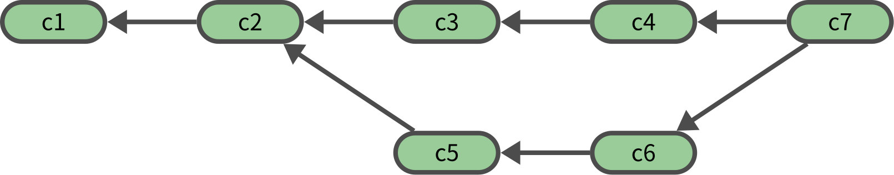

cd $HOME/lab
rm -rf test_branch_01
git init test_branch_01
cd test_branch_01브랜치
커밋 그래프
- 커밋 객체는 부모 커밋을 가리키므로 커밋을 계속하면 사슬 형태의 커밋 연결관계가 생긴다.

- 브랜치 기능을 사용하면 하나의 부모 커밋이 여러개의 자식 커밋을 가질 수도 있다.

- 머지 기능을 사용하면 하나의 자식 커밋이 2개의 부모 커밋을 가질 수도 있다.

- 따라서 일반적인 경우에 커밋 객체들은 컴퓨터 과학에서 말하는 그래프(graph) 구조를 가진다.
브랜치
- 말단 커밋(leaf commit)
- 자신을 가리키는 자식 커밋이 없는 커밋
- 브랜치(branch)
- 말단 커밋에 대한 참조 이름
- 하나의 말단 커밋이 여러개의 브랜치(참조 이름)를 가질 수 있다.


브랜치 정보의 저장
- 브랜치를 생성하면 해당 브랜치 정보는
.git/refs/heads/디렉토리 아래에 브랜치 이름과 같은 이름의 텍스트 파일로 저장된다. - 예를 들어 main 브랜치의 정보는
.git/refs/heads/main파일로 저장된다. - 브랜치 정보 파일의 내용은 해당 브랜치의 마지막(최신) 커밋을 가리키는 해시값이다.
디폴트 브랜치
- 레포지토리 생성 직후에는 브랜치가 존재하지 않는다.
- 최초로 하나의 커밋을 만들면 미리 정해진 이름으로 최초 커밋을 가리키는 브랜치가 생성된다. 이를 디폴트 브랜치라고 한다.
- git 자체의 디폴트 브랜치 이름은
master이다. - 여기에서는 디폴트 브랜치 이름으로
main을 사용한다.
디폴트 브랜치 이름 변경
레포지토리 생성전에
init.defaultBranch설정으로 디폴트 브랜치 이름을 미리 변경할 수 있다.git config init.defaultBranch "<디폴트 브랜치 이름>"레포지토리 생성시에
--initial-branch인수로 디폴트 브랜치 이름을 지정 가능git init --initial-branch="<최초 브랜치 이름>"- 일단 레포지토리가 생성되면 최초 커밋이 생성될 때 같이 생성되는 최초 브랜치 이름은 변경할 수 없다.
- 일단 브랜치 생성 후에 이름을 바꾸는 것은 가능
실습
- 레포지토리 생성
- 최초 커밋
echo "line 1" >> file.txt
git add .
git commit -m c1[main (root-commit) 8e70f9e] c1
1 file changed, 1 insertion(+)
create mode 100644 file.txt- 브랜치 정보 확인
pwd
ls -al .git/refs/heads/Users/joelkim/Work/personal/book_git/lab/test_branch_01
total 8
drwxr-xr-x@ 3 joelkim staff 96 Aug 14 17:55 .
drwxr-xr-x@ 4 joelkim staff 128 Aug 14 17:55 ..
-rw-r--r--@ 1 joelkim staff 41 Aug 14 17:55 maincat .git/refs/heads/main8e70f9ee0f51d00a870ff44a64528c9ee4e1a60d브랜치 명령
| 목적 | 명령 | 설명 |
|---|---|---|
| 브랜치 목록 조회 | git branch |
현재 브랜치 앞에 * 표시 |
| 신규 브랜치 생성 | git branch <생성할 브랜치 이름> |
- |
| 브랜치 전환 | git switch <전환할 브랜치 이름> |
버전 2.23 이후 |
| 브랜치 전환 | git checkout <전환할 브랜치 이름> |
버전 2.23 전 |
| 신규 브랜치 생성하며 전환 | git switch -c <생성하고 전환할 브랜치 이름> |
버전 2.23 이후 |
| 신규 브랜치 생성하며 전환 | git checkout -b <생성하고 전환할 브랜치 이름> |
버전 2.23 전 |
| 기존 브랜치 이름 변경 | git branch -m <기존 브랜치 이름> <변경 후 브랜치 이름> |
변경 후 브랜치 이름과 같은 브랜치가 존재하면 실패 |
| 기존 브랜치 이름 강제 변경 | git branch -M <기존 브랜치 이름> <변경 후 브랜치 이름> |
변경 후 브랜치 이름과 같은 브랜치가 존재해도 덮어씀 |
| 브랜치 삭제 | git branch -d <기존 브랜치 이름> |
현재 브랜치가 아니고 삭제되지 않는 브랜치에 병햡되어 있어야 삭제 가능 |
| 브랜치 강제 삭제 | git branch -D <기존 브랜치 이름> |
무조건 삭제 |
헤드 정보
헤드(HEAD) 정보는 사용자가 현재 어떤 브랜치에 있는지를 알려주는 정보다.
.git/HEAD텍스트 파일로 저장되어 관리된다.만약 현재 브랜치가 main 브랜치이면
.git/HEAD파일의 내용은 다음과 같다.ref: refs/heads/main
실습
- 현재 브랜치 목록 출력
git branch* main- 현재 브랜치 정보를 담고 있는
.git/HEAD파일의 내용 확인- main 브랜치 정보를 담고 있는 브랜치 정보 파일을 가리킨다
cat .git/HEADref: refs/heads/main- 브랜치 정보 디렉토리내에는 main 브랜치 정보를 담고 있는 브랜치 정보 파일이 존재한다.
ls -al .git/refs/headstotal 8
drwxr-xr-x@ 3 joelkim staff 96 Aug 14 17:55 .
drwxr-xr-x@ 4 joelkim staff 128 Aug 14 17:55 ..
-rw-r--r--@ 1 joelkim staff 41 Aug 14 17:55 main- main 브랜치 정보를 담고 있는 브랜치 파일의 내용 확인
- main 브랜치의 마지막(최신) 커밋을 가리킨다
cat .git/refs/heads/main8e70f9ee0f51d00a870ff44a64528c9ee4e1a60db1브랜치 생성
git branch b1- 현재 브랜치 목록 출력
git branch b1
* main- 브랜치 정보 디렉토리를 다시 확인하면 b1 이라는 브랜치 정보 파일이 만들어져 있다
ls -al .git/refs/headstotal 16
drwxr-xr-x@ 4 joelkim staff 128 Aug 14 17:55 .
drwxr-xr-x@ 4 joelkim staff 128 Aug 14 17:55 ..
-rw-r--r--@ 1 joelkim staff 41 Aug 14 17:55 b1
-rw-r--r--@ 1 joelkim staff 41 Aug 14 17:55 mainb1브랜치로 전환
git switch b1Switched to branch 'b1'- 현재 브랜치 목록 출력
git branch* b1
main- 현재 브랜치 정보를 담고 있는
.git/HEAD파일의 내용 확인- 이제는 main 브랜치가 아닌 b1 브랜치를 가리키고 있다
cat .git/HEADref: refs/heads/b1- b1 브랜치 정보를 담고 있는 브랜치 파일의 내용 확인
- 브랜치는 다르지만 main 브랜치가 가리키는 커밋과 같은 커밋을 가리키고 있음
cat .git/refs/heads/b18e70f9ee0f51d00a870ff44a64528c9ee4e1a60d- b2 브랜치를 생성하면서 전환
git switch -c b2Switched to a new branch 'b2'git branch b1
* b2
main- 현재 브랜치 정보를 담고 있는
.git/HEAD파일의 내용 확인- 이제는 b1 브랜치가 아닌 b2 브랜치를 가리키고 있다
cat .git/HEADref: refs/heads/b2- 파일 변경
echo "line 2" >> file.txt
git add .
git commit -m c2[b2 0cb5d23] c2
1 file changed, 1 insertion(+)- b3 브랜치 생성 및 전환
git switch -c b3Switched to a new branch 'b3'- file2.txt 파일 추가
touch file2.txt
git add .
git commit -m c3[b3 1a096bc] c3
1 file changed, 0 insertions(+), 0 deletions(-)
create mode 100644 file2.txt%%{
init: {
"gitGraph": {
"rotateCommitLabel": false
},
"themeVariables": {
"commitLabelColor": '#000000',
"commitLabelBackground": '#ffffff',
"commitLabelFontSize": '15px'
}
}}%%
gitGraph
commit id: "c1"
branch b1
branch b2
commit id: "c2: file.txt 파일 변경"
branch b3
commit id: "c3: file2.txt 파일 추가"
| 파일 | b2 | b3 |
|---|---|---|
| file.txt | 커밋 | 커밋 |
| file2.txt | - | 커밋 |
| file3.txt | - | - |
브랜치 전환시의 파일 변화
- 브랜치를 전환하면 출발지 브랜치와 목적지 브랜치에서 해당 파일이 커밋되어 있는지 여부에 따라 파일에 발생하는 현상이 달라진다.
| 출발지 브랜치 | 목적지 브랜치 | 결과 |
|---|---|---|
| 커밋 | 커밋 | 목적지 브랜치에 커밋된 내용으로 바뀐다. |
| 커밋 | - | 파일이 사라진다 |
| - | 커밋 | 출발지 브랜치의 워크트리에 같은 이름의 파일이 있으면 실패, 없으면 생긴다. |
| - | - | 그대로 유지된다. |
실습
- b2 -> b3 전환하면
- file.txt 파일은 두 브랜치에 모두 있으므로 파일 내용이 바뀐다.
- file2.txt 파일은 b1 브랜치에는 없지만 b2 브랜치에는 있으므로
- 만약 file2.txt 라는 파일이 워크트리에 없으면 생긴다.
- 만약 file2.txt 라는 파일이 워크트리에 있으면 에러
- file3.txt 파일은 두 브랜치에 모두 없으므로 그냥 유지된다.
- 우선 b1 브랜치로 전환
git switch b2Switched to branch 'b2'- 비추적 상태의 파일 file3.txt 생성
touch file3.txt
ls -altotal 8
drwxr-xr-x@ 5 joelkim staff 160 Aug 14 17:55 .
drwxr-xr-x@ 4 joelkim staff 128 Aug 14 17:55 ..
drwxr-xr-x@ 12 joelkim staff 384 Aug 14 17:55 .git
-rw-r--r--@ 1 joelkim staff 14 Aug 14 17:55 file.txt
-rw-r--r--@ 1 joelkim staff 0 Aug 14 17:55 file3.txt- b3 브랜치로 전환
git switch b3Switched to branch 'b3'- file2.txt가 생기고 file3.txt는 그대로 유지
ls -altotal 8
drwxr-xr-x@ 6 joelkim staff 192 Aug 14 17:55 .
drwxr-xr-x@ 4 joelkim staff 128 Aug 14 17:55 ..
drwxr-xr-x@ 12 joelkim staff 384 Aug 14 17:55 .git
-rw-r--r--@ 1 joelkim staff 14 Aug 14 17:55 file.txt
-rw-r--r--@ 1 joelkim staff 0 Aug 14 17:55 file2.txt
-rw-r--r--@ 1 joelkim staff 0 Aug 14 17:55 file3.txt- 이번에는 다시 b2로 가서
git switch b2Switched to branch 'b2'- 비추적 상태의 파일 file2.txt 생성
touch file2.txt
ls -altotal 8
drwxr-xr-x@ 6 joelkim staff 192 Aug 14 17:55 .
drwxr-xr-x@ 4 joelkim staff 128 Aug 14 17:55 ..
drwxr-xr-x@ 12 joelkim staff 384 Aug 14 17:55 .git
-rw-r--r--@ 1 joelkim staff 14 Aug 14 17:55 file.txt
-rw-r--r--@ 1 joelkim staff 0 Aug 14 17:55 file2.txt
-rw-r--r--@ 1 joelkim staff 0 Aug 14 17:55 file3.txt- b3 브랜치로 전환하려고 하면 file2.txt가 생기며 같은 이름을 가진 비추적 상태의 파일을 덮어쓰게 되므로 에러 발생하여 전환 실패
git switch b3 || trueerror: The following untracked working tree files would be overwritten by checkout:
file2.txt
Please move or remove them before you switch branches.
Aborting- file2.txt 파일이 없어야 전환이 가능하다.
rm -f file2.txt
git switch b3Switched to branch 'b3'- 반대로 b3 -> b2 전환하면
- file.txt 파일은 두 브랜치에 모두 있으므로 내용이 바뀜
- file2.txt 파일은 b3 브랜치에는 있지만 b3 브랜치에는 없으므로 생긴다.
- file3.txt 파일은 두 브랜치에 모두 없으므로 그냥 유지된다.
ls -altotal 8
drwxr-xr-x@ 6 joelkim staff 192 Aug 14 17:55 .
drwxr-xr-x@ 4 joelkim staff 128 Aug 14 17:55 ..
drwxr-xr-x@ 12 joelkim staff 384 Aug 14 17:55 .git
-rw-r--r--@ 1 joelkim staff 14 Aug 14 17:55 file.txt
-rw-r--r--@ 1 joelkim staff 0 Aug 14 17:55 file2.txt
-rw-r--r--@ 1 joelkim staff 0 Aug 14 17:55 file3.txtgit switch b2Switched to branch 'b2'ls -altotal 8
drwxr-xr-x@ 5 joelkim staff 160 Aug 14 17:55 .
drwxr-xr-x@ 4 joelkim staff 128 Aug 14 17:55 ..
drwxr-xr-x@ 12 joelkim staff 384 Aug 14 17:55 .git
-rw-r--r--@ 1 joelkim staff 14 Aug 14 17:55 file.txt
-rw-r--r--@ 1 joelkim staff 0 Aug 14 17:55 file3.txt브랜치 전환이 불가능한 상황
- 출발지 브랜치의 워크트리에 있는 파일의 상태가 다음과 같으면 전환할 수 없다.
- 변경(modified), 삭제(deleted) 상태의 파일이 존재
- 목적지 브랜치에 커밋되어 있는 파일과 같은 이름의 신규(new) 파일이 존재
- 즉 변경/삭제 상태의 파일이 존재하지 않아야 하고, 신규파일의 경우 목적지 브랜치에 해당 이름의 파일이 없어야 한다.
- 이는 브랜치를 전환하면서 현재 워크트리의 변경사항이 목적지 브랜치 내용으로 덮어씌워지는 것을 방지하기 위함이다.
- 변경 혹은 신규 파일의 내용이 목적지 브랜치에 커밋된 파일과 같은 경우에도 상관없이 불가능하다.
- 다만 브랜치 이름만 다르고 실제로 가리키는 커밋은 같은 경우, 즉 브랜치를 새로 만든 직후로 아직 새로운 커밋을 하기 전에는 무조건 전환이 가능하다
실습
브랜치 이름만 다르고 가리키는 커밋은 같은 경우
main 브랜치와 b1 브랜치는 브랜치 이름만 다를 뿐 실제로 가리키는 커밋이 같다.
이 경우는 특수한 경우로 브랜치 전환에 아무런 제약이 없다.
main 브랜치로 전환하여
git switch mainSwitched to branch 'main'- file.txt 파일을 변경한다.
echo "line 2" >> file.txt
git statusOn branch main
Changes not staged for commit:
(use "git add <file>..." to update what will be committed)
(use "git restore <file>..." to discard changes in working directory)
modified: file.txt
Untracked files:
(use "git add <file>..." to include in what will be committed)
file3.txt
no changes added to commit (use "git add" and/or "git commit -a")- 그래도 b1 브랜치로 전환하는데 아무런 이상이 없다
git switch b1M file.txt
Switched to branch 'b1'- b1 브랜치에서 수정한 경우에도 마찬가지로 main 브랜치로 문제없이 전환된다.
echo "line 3" >> file.txt
git switch mainM file.txt
Switched to branch 'main'두 브랜치가 실제로 다른 커밋을 가리키는 경우
이제는 실질적으로 다른 브랜치인 b2 브랜치과 b3 브랜치 간에서 전환해 본다.
워크트리 상태를 원복하고
git restore .- b2 브랜치로 전환한다.
git switch b2Switched to branch 'b2'- 이 때는 파일 file.txt가 변경(modified) 상태이므로 b2 브랜치로 전환이 불가능하다.
git statusOn branch b2
Untracked files:
(use "git add <file>..." to include in what will be committed)
file3.txt
nothing added to commit but untracked files present (use "git add" to track)git switch b3 || trueSwitched to branch 'b3'- file.txt 파일의 현재 내용이 목적지 b2 브랜치의 file.txt 파일 내용과 같아도 마찬가지다.
git restore --source=b3 -- file.txt
cat file.txtline 1
line 2git switch b3 || trueAlready on 'b3'변경 파일이 아닌 신규 파일의 경우 목적지 브랜치에 해당 이름의 파일이 커밋되어 있는지 아닌지 여부에 따라 달라진다.
일단 file.txt의 변경사항을 원복한다.
git restore .- 현재 file3.txt라는 신규 파일이 있지만 목적지 브랜치 b3에는 없다.
git statusOn branch b3
Untracked files:
(use "git add <file>..." to include in what will be committed)
file3.txt
nothing added to commit but untracked files present (use "git add" to track)- 따라서 b3 브랜치로 전환할 수 있다.
git switch b3Already on 'b3'- 다시 b2 브랜치로 돌아가서
git switch b2Switched to branch 'b2'- 이번에는 b3 브랜치에만 존재하는 file2.txt라는 이름의 파일을 생성한다.
touch file2.txt
git statusOn branch b2
Untracked files:
(use "git add <file>..." to include in what will be committed)
file2.txt
file3.txt
nothing added to commit but untracked files present (use "git add" to track)- 이 때는 file2.txt 파일의 현재 내용이 b3 브랜치의 file2.txt 내용으로 바뀌는 것을 막기 위해 b3 브랜치로 전환할 수 없다
git switch b3 || trueerror: The following untracked working tree files would be overwritten by checkout:
file2.txt
Please move or remove them before you switch branches.
Aborting